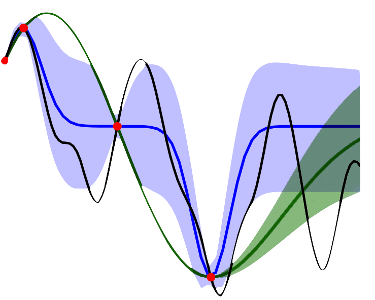
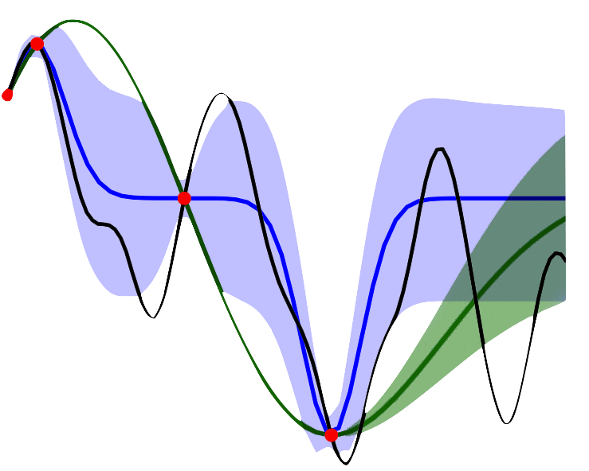
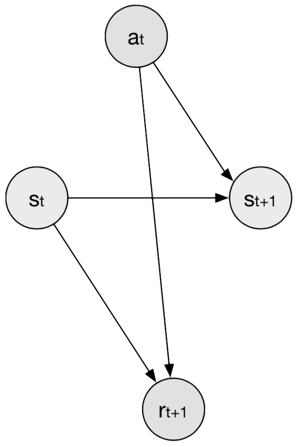

Bayesian Non-parametric models
Approximate inference schemes for scaling and generalising Bayesian Non-parametric models such as Gaussian Processes.
My MPhil Thesis
I am recent graduate student from the University of Cambridge, where I pursued a MPhil in Machine Learning, Speech and Language Technology as part of the Machine Learning Group in 2017.
Born and raised in Bilbao (Basque Country, Spain), in 2012 I moved to the UK to study Mathematics in 3+1-year master’s degree at the University of Oxford. During this time, I developed a broad interest in Applied Mathematics covering branches such as Numerical methods for Partial Differential Equations, Probabilistic inference, Optimization and Quantum Computing.
After a summer internship at BCAM and undertaking a course on Machine Learning and Data Mining by Prof. Dino Sejdinovic, in 2016 I decided to pursue a career as a Machine Learning Engineer starting with a MPhil at Cambridge. For my master’s thesis, “Pathologies of Deep Sparse Gaussian Process Regression”, I worked under the supervision of Dr. Richard E. Turner and Thang Bui on the implementation of Deep Gaussian Processes in the framework of Bayesian Optimisation.
My goal is to develop algorithms that help us model uncertainty through the Bayesian approach for Decision Making . That is, modelling uncertainty around our predictions using a posterior formed by updating our prior beliefs based on observed data.
See moreMy research focus is on Bayesian Machine Learning and its applications to Bayesian Optimisation and Reinforcement Learning. I am especially interested in graphical models and approximate inference methods.
Approximate inference schemes for scaling and generalising Bayesian Non-parametric models such as Gaussian Processes.
My MPhil ThesisDesigning autonomous agents that learn to complete an assigned task by interacting with the environment. Particularly, solving the exploitation-exploration dilemma.
See blog